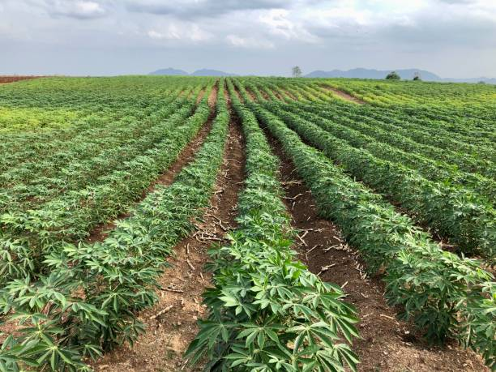
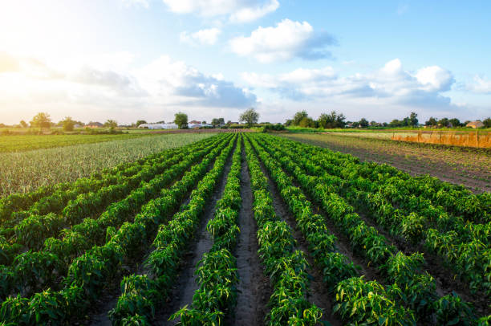
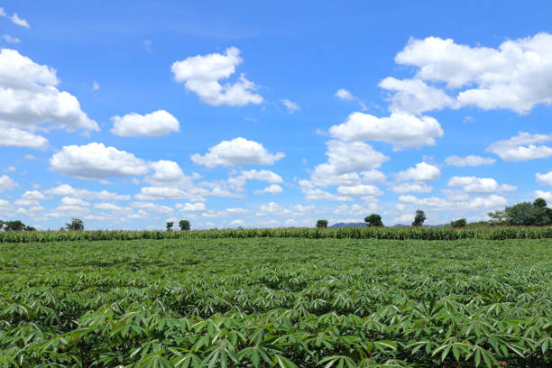

Amala is the one of the most popular food in yoruba land
Instead of taking hot tea, I prefer taking hot palp (Ogi)



I like Amala and vegetables(Ewedu)
I was born in Nigeria
I have a first degree and a second degree in Mathematics
2019-2021: Tai Solarin University of Education, Ijebu-Ode, Ogun State Msc. in Applied Mathematics
2010-2015: FEDERAL UNIVERSITY OF TECHNOLOGY, AKURE. B.Tech. Industrial Mathematics Second Class (Hons.) Upper Division
Hamoye Data Science Internship 2022
Part-time Further Mathematics Teacher Ogbogbo Baptist Grammar School, Ijebu-North East, Ogun State. 2021-2022
Further Mathematics Teacher (NPOWER) Ogbogbo Baptist Grammar School, Ijebu-North East, Ogun. 2018-2020
Further Mathematics and Mathematics Teacher Ad-dawah Comprehensive College, Ijebu-Ode, Ogun State.2017-2018
Further Mathematics Teacher (NYSC) Ogbogbo Baptist Grammar School, Ijebu-North East, Ogun State. 2016 – 2017
Amala is the one of the most popular food in yoruba land
Instead of taking hot tea, I prefer taking hot palp (Ogi)